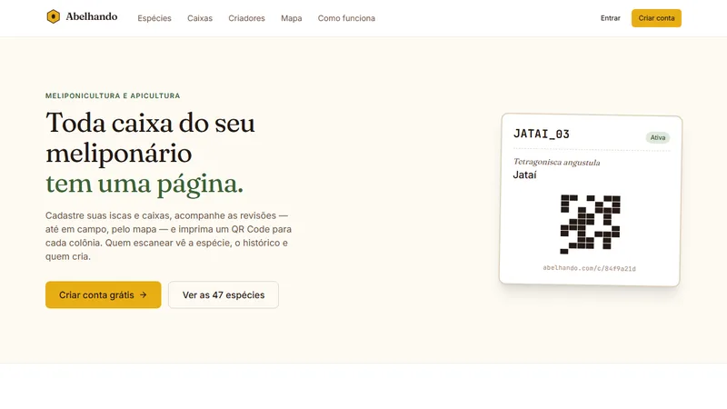

App web · no ar
Abelhando
- Problema
- Criadores de abelhas nativas controlam caixas, iscas e revisões em cadernos e planilhas soltas.
- Solução
- Caderno de campo digital: cadastro de caixas e iscas, QR Code em cada caixa com histórico e fotos, mapa para revisões pelo celular e mensagens entre criadores.
- Resultado
- Plataforma gratuita no ar, com catálogo de 47 espécies e sem precisar instalar app.
- Next.js
- TypeScript
- Supabase
- Leaflet
- Vercel